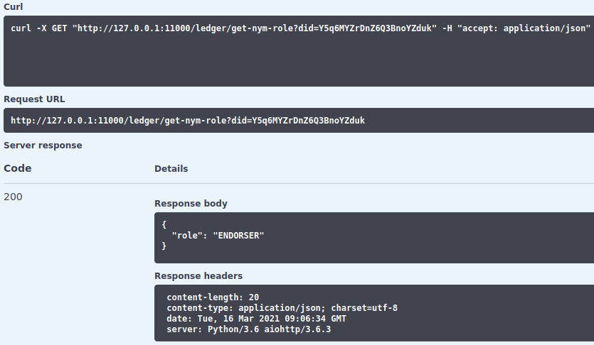

Aca-py 0.6.0: INFO Ledger instance not provided error/bug?
i am new to Hyperledger Aries and i can´t figure out what i am doing wrong.
Environment:
- Ubuntu16LTS
- Docker 18.09.7 build 2d0083d
- hyperledger-aries-python version: 0.6.0 (sourcecode)
From the aca-py repo (https://github.com/hyperledger/aries-cloudagent-python i run:
./scripts/run_docker start -e http://host.docker.internal:8000 -it http 0.0.0.0 8000 -ot http --admin 0.0.0.0 11000 --admin-insecure-mode --log-level DEBUG --genesis-url https://raw.githubusercontent.com/CHempel- esatus/SSI4DE_Genesis/master/pool_transactions_genesis --trace
NOTE: I have tried different pool_genesis_transaction files and tried to pass them in various ways (via URL, via a File located in the docker conainer). It always drops the same or similar Info:
2021-03-12 09:48:32,311 aries_cloudagent.config.ledger INFO Ledger instance not provided 2021-03-12 09:48:32,312 aries_cloudagent.core.conductor WARNING No ledger configured
Here is the full output:
2021-03-12 09:48:31,035 asyncio DEBUG Using selector: EpollSelector 2021-03-12 09:48:31,036 aries_cloudagent.core.plugin_registry DEBUG Loaded module: aries_cloudagent.protocols.out_of_band 2021-03-12 09:48:31,037 aries_cloudagent.core.plugin_registry DEBUG Loaded module: aries_cloudagent.protocols.actionmenu 2021-03-12 09:48:31,038 aries_cloudagent.core.plugin_registry DEBUG Loaded module: aries_cloudagent.protocols.routing 2021-03-12 09:48:31,039 aries_cloudagent.core.plugin_registry DEBUG Loaded module: aries_cloudagent.protocols.discovery 2021-03-12 09:48:31,041 aries_cloudagent.core.plugin_registry DEBUG Loaded module: aries_cloudagent.protocols.introduction 2021-03-12 09:48:31,041 aries_cloudagent.core.plugin_registry DEBUG Loaded module: aries_cloudagent.protocols.problem_report 2021-03-12 09:48:31,042 aries_cloudagent.core.plugin_registry DEBUG Loaded module: aries_cloudagent.protocols.coordinate_mediation 2021-03-12 09:48:31,043 aries_cloudagent.core.plugin_registry DEBUG Loaded module: aries_cloudagent.protocols.present_proof 2021-03-12 09:48:31,044 aries_cloudagent.core.plugin_registry DEBUG Loaded module: aries_cloudagent.protocols.trustping 2021-03-12 09:48:31,045 aries_cloudagent.core.plugin_registry DEBUG Loaded module: aries_cloudagent.protocols.didexchange 2021-03-12 09:48:31,047 aries_cloudagent.core.plugin_registry DEBUG Loaded module: aries_cloudagent.protocols.issue_credential 2021-03-12 09:48:31,048 aries_cloudagent.core.plugin_registry DEBUG Loaded module: aries_cloudagent.protocols.basicmessage 2021-03-12 09:48:31,050 aries_cloudagent.core.plugin_registry DEBUG Loaded module: aries_cloudagent.protocols.connections 2021-03-12 09:48:31,051 aries_cloudagent.core.plugin_registry DEBUG Loaded module: aries_cloudagent.holder 2021-03-12 09:48:31,057 aries_cloudagent.core.plugin_registry DEBUG Loaded module: aries_cloudagent.ledger 2021-03-12 09:48:31,072 aries_cloudagent.core.plugin_registry DEBUG Loaded module: aries_cloudagent.messaging.credential_definitions 2021-03-12 09:48:31,085 aries_cloudagent.core.plugin_registry DEBUG Loaded module: aries_cloudagent.messaging.schemas 2021-03-12 09:48:31,091 aries_cloudagent.core.plugin_registry DEBUG Loaded module: aries_cloudagent.revocation 2021-03-12 09:48:31,105 aries_cloudagent.core.plugin_registry DEBUG Loaded module: aries_cloudagent.wallet 2021-03-12 09:48:31,119 aries_cloudagent.config.ledger INFO Fetching genesis transactions from: https://raw.githubusercontent.com/CHempel-esatus/SSI4DE_Genesis/master/pool_transactions_genesis 2021-03-12 09:48:32,302 aries_cloudagent.core.profile INFO Create profile manager: in_memory 2021-03-12 09:48:32,311 aries_cloudagent.config.ledger INFO Ledger instance not provided 2021-03-12 09:48:32,312 aries_cloudagent.core.conductor WARNING No ledger configured :::::::::::::::::::::::::::::::::::::::::::::: :: Aries Cloud Agent :: :: :: :: :: :: Inbound Transports: :: :: :: :: - http://0.0.0.0:8000 :: :: :: :: Outbound Transports: :: :: :: :: - http :: :: - https :: :: :: :: Administration API: :: :: :: :: - http://0.0.0.0:11000 :: :: :: :: ver: 0.6.0 :: :::::::::::::::::::::::::::::::::::::::::::::: Listening...
Looking in the demos i just dont know why my aries can not connect to any indy-ledger. Using indy-cli with the same genesis-files worked fine. The CLI was able to connect so i assume that all pool_genesis_files where correct.
Am i doing something wrong or is something missing?
Answer
I finaly found the solution. The Story how i found it:
Short Story:
Prerequisites: Install indy-sdk, aries-cloudagent, python3_indy and python 3.6.9+ on your machine. See the long story if you don´t know how to do that. Python 3.6.9 comes out of the box with Ubuntu18LTS
- install aries-cloudagent-python (aca-py) localy.
- run aca-py first with the provision command to config your aca-py instance. Use the argument wallet-type indy for that
- run aca-py normaly with the start command and your config-params. Be sure to use the --wallet-type indy flag to be able to connect to an indy ledger
Long Story:
Inside the aries-cloudagent-python (aca-py) code, it seems that the configuration, which ledger to use (e.g. an indy ledger) comes from the specified wallet type.
1st.: providing arguments: --wallet-type indy -> this returned the error, that --wallet-name and --wallet-key parameters are needed. So i provided them:
./scripts/run_docker start -e http://127.0.0.1:8000 -it http 127.0.0.1 8000 -ot http --admin 127.0.0.1 11000 --admin-insecure-mode --log-level DEBUG --genesis-url https://raw.githubusercontent.com/CHempel-esatus/SSI4DE_Genesis/master/pool_transactions_genesis --trace --recreate-wallet --wallet-type indy --wallet-name test --wallet-key 12345
2nd.: This results in the following error, telling that no Database for the wallet is provided.
2021-03-16 09:19:45,447 indy.libindy DEBUG _indy_loop_callback: >>> command_handle: 0, err , args: (0,) 2021-03-16 09:19:45,447 indy.libindy WARNING _indy_loop_callback: Function returned error 2021-03-16 09:19:45,449 indy.libindy DEBUG _indy_loop_callback <<< 2021-03-16 09:19:45,449 aries_cloudagent.commands.start ERROR Exception during startup: Traceback (most recent call last): File "/home/indy/aries_cloudagent/indy/sdk/wallet_setup.py", line 169, in open_wallet credentials=json.dumps(self.wallet_access), File "/home/indy/.pyenv/versions/3.6.13/lib/python3.6/site-packages/indy/wallet.py", line 127, in open_wallet open_wallet.cb) indy.error.WalletNotFoundError The above exception was the direct cause of the following exception: Traceback (most recent call last): File "/home/indy/aries_cloudagent/commands/start.py", line 72, in init await startup File "/home/indy/aries_cloudagent/commands/start.py", line 28, in start_app await conductor.setup() File "/home/indy/aries_cloudagent/core/conductor.py", line 91, in setup self.root_profile, self.setup_public_did = await wallet_config(context) File "/home/indy/aries_cloudagent/config/wallet.py", line 40, in wallet_config profile = await mgr.open(context, profile_cfg) File "/home/indy/aries_cloudagent/indy/sdk/profile.py", line 161, in open opened = await indy_config.open_wallet() File "/home/indy/aries_cloudagent/indy/sdk/wallet_setup.py", line 182, in open_wallet ) from x_indy File "/home/indy/aries_cloudagent/indy/sdk/wallet_setup.py", line 169, in open_wallet credentials=json.dumps(self.wallet_access), File "/home/indy/.pyenv/versions/3.6.13/lib/python3.6/site-packages/indy/wallet.py", line 127, in open_wallet open_wallet.cb) aries_cloudagent.core.error.ProfileNotFoundError: Wallet 'test' not found: Error: Wallet not found Caused by: No wallet database exists
3rd.: The documentation of aca-py at https://github.com/hyperledger/aries- cloudagent-python/blob/main/DevReadMe.md explicitly says:
Running Locally: For local development, we recommend using the provided Docker scripts to run the ACA-Py software
4th.: aca-py is able to use sqlite, which is installed in the docker container. To see that aca-py is compatible with sqlite, run
./scripts/run_docker start --help
which returns the list of available arguments. One is the following:
--wallet-storage-type <storage-type> Specifies the type of Indy wallet backend to use. Supported internal storage types are 'basic' (memory), 'default' (sqlite), and 'postgres_storage'. The default, if not specified, is 'default'. [env var: ACAPY_WALLET_STORAGE_TYPE]
5th: Running
./scripts/run_docker provision -e http --genesis-url https://raw.githubusercontent.com/CHempel-esatus/SSI4DE_Genesis/master/pool_transactions_genesis --recreate-wallet --wallet-type indy --wallet-name test --wallet-key 12345
returns
Successfully tagged aries-cloudagent-run:latest Created new profile Profile backend: indy Profile name: test No public DID Ledger configured
This is weird, because now he is able to find sqlite. This seems to configure the Database properly so it can be used. But because it is inside a docker container, and the container discarding every change, this internal configuration will never be available.
6th. To solve this, i´ve installed on an Ubuntu18LTS the aries cloud-agent package localy from https://pypi.org/project/aries-cloudagent/
pip3 install aries-cloudagent pip3 install python3_indy
and followed the installation instructions for the indy-sdk https://github.com/hyperledger/indy-sdk
I also installed sqlite on the local machine with:
sudo apt install sqlite
7th.: After i rebooted the system, i executed:
aca-py provision -e http://127.0.0.1:8000 --genesis-url https://raw.githubusercontent.com/CHempel-esatus/SSI4DE_Genesis/master/pool_transactions_genesis --recreate-wallet --wallet-type indy --wallet-name test --wallet-key test
returning
Created new profile Profile backend: indy Profile name: test No public DID Ledger configured
8th.: After that, i cloud run aca-py and connect to my ledger using the admin- REST-api
